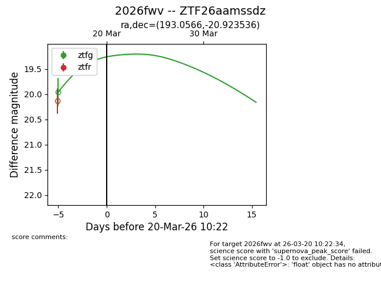
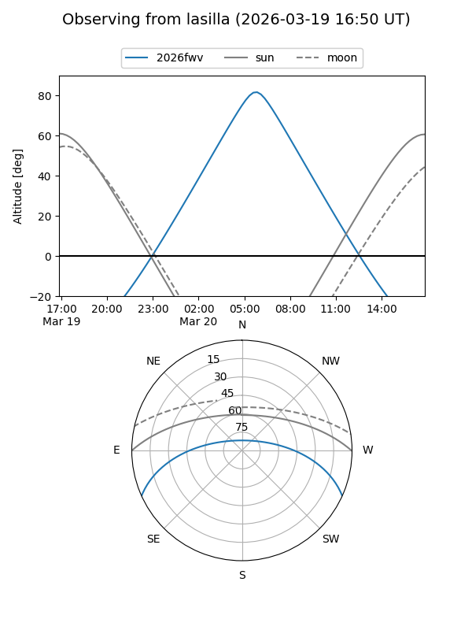
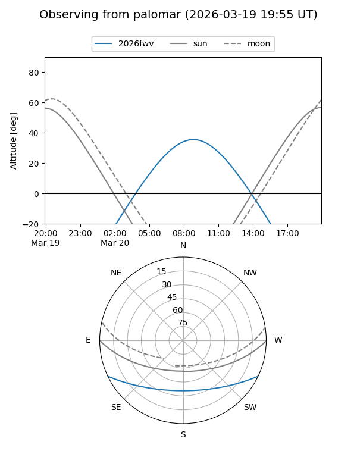
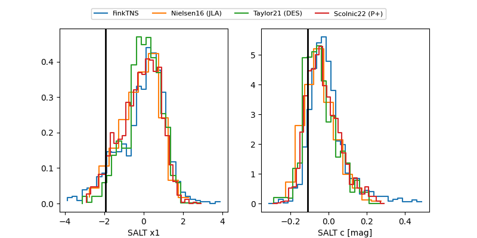

2026fwv
Target 2026fwv at 2026-03-20 10:24
Aliases and brokers:
FINK: link
Lasair: link
ALeRCE: link
TNS: link
YSE: link
alt names
ZTF26aamssdz (ztf,fink_ztf)
2026fwv (tns,yse)
Coordinates:
equatorial (ra, dec) = 193.0566,-20.92354
equatorial (HMS+DMS) = 12:52:13.58,-20:55:24.73
galactic (l, b) = (303.1795,+41.94783)
Flags:
Photometry:
last ztfg=19.41
1 ztfg detections
Lightcurve

Visibility


Additional plots
